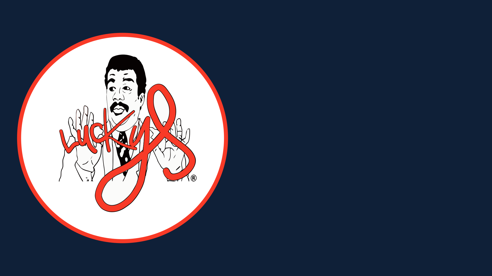
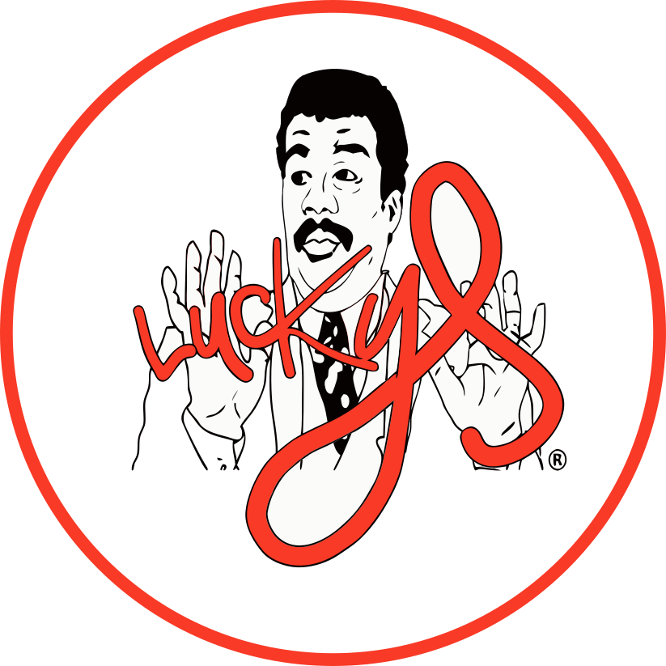
Luckys
Burguer
Menos corporativo, más calle. Diseño hand-drawn y lettering para la nueva carta de Luckys Burguer.
Luckys Burguer es una hamburguesería local bastante peculiar: un pequeño kiosco de comida rápida con un ambiente muy canalla, ubicado en La Algaba. Su clientela abarca desde jóvenes que reciben la paga del fin de semana, público de mediana edad, turistas atraídos por su contenido en Redes Sociales y reseñas.
El reto era claro: crear una carta que reflejara esa esencia gamberra y callejera, alejándose de los diseños típicos de restaurantes y acercándose más a la estética del street art y el graffiti.
Aposté por un diseño 100% hand-drawn, simulando el trazo rápido y agresivo de un rotulador. Desarrollé letterings personalizados con estilo graffiti para cada producto, incorporando notas al margen, flechas y tachones que le dan al menú esa guiño del street art.
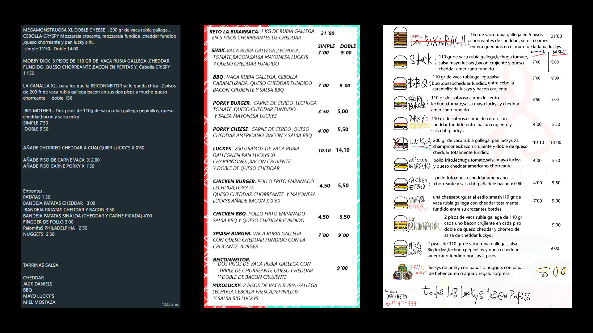
Proceso de conceptualización
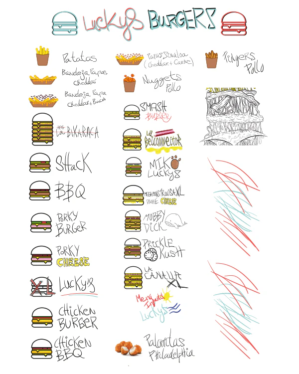
Proceso de conceptualización 01
Las ilustraciones acompañan esta vibra con bocetos directos que desglosan cada hamburguesa piso por piso. El verdadero reto gráfico fue organizar toda esta explosión visual en un caos controlado a doble columna; logrando que, bajo toda esa estética urbana y rompedora, el cliente pueda leer e interactuar con el menú de forma totalmente intuitiva.
"Dibujos, bocetos y una carta al más estilo canalla"
José Manuel Domínguez · Propietario
- Identidad
- Luckys Burguer
- Año
- Disciplina
- Ilustraciones · Carta · RRSS · Impresión
- Herramientas
- Illustrator
- Entregables
- Láminas A3 · Carta · Ilustraciones
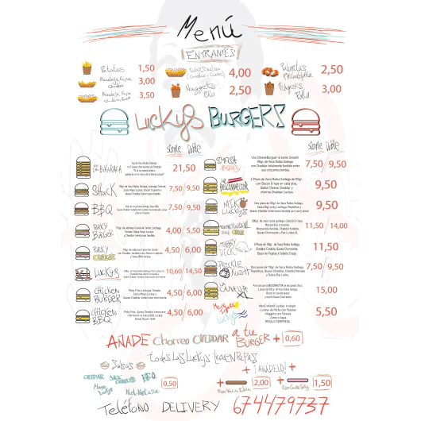
Formato Digital
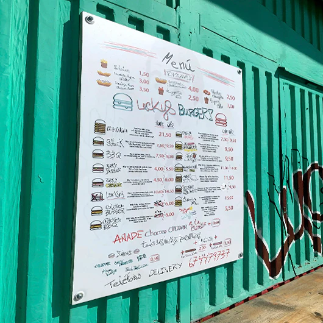
Aplicación Física
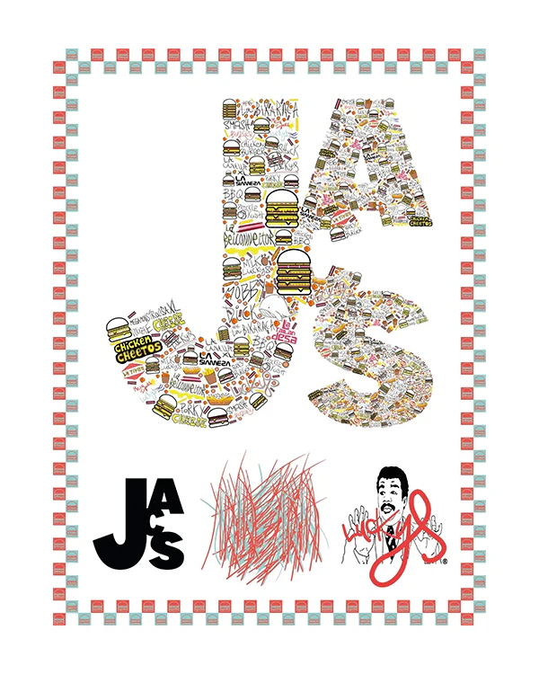
Aprovechando los diferentes recursos creados para la carta, se ha desarrollado otra ilustración pensada en una futura Colaboración entre JACS y Luckys, que se aplicará en diferentes soportes físicos como camisetas, gorras o packaging de producto.
A continuación, se muestran diferentes trabajos realizados para Luckys Burguer: Una Ilustración de su hamburguesa más icónica, la Beiconneitor; Micko Boss (un perro que siempre aparece en Luckys, considerado como la mascota del local).
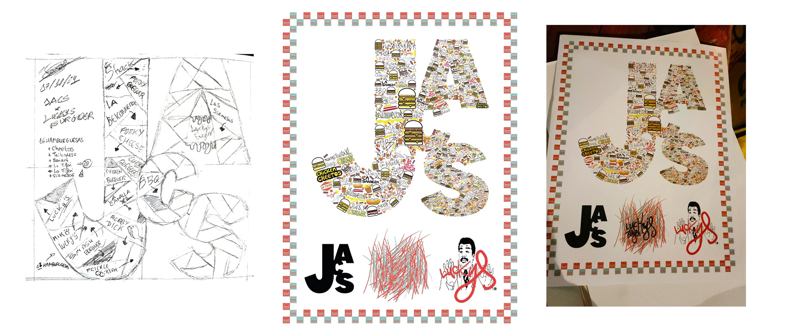
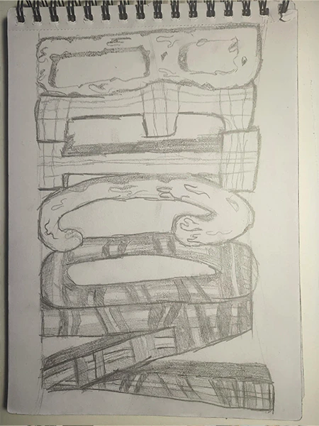
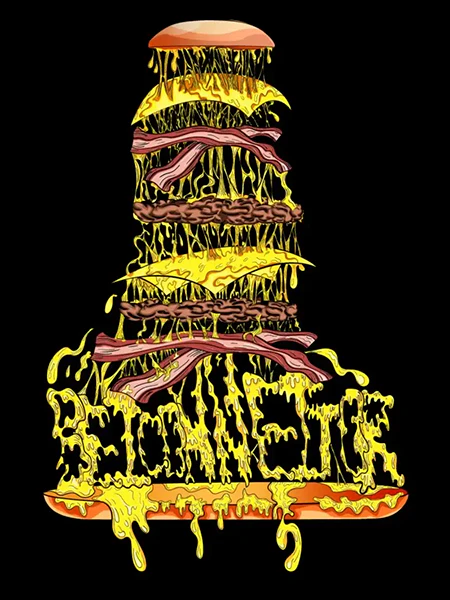

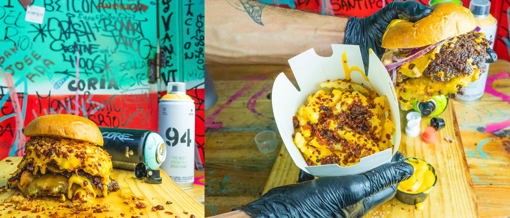